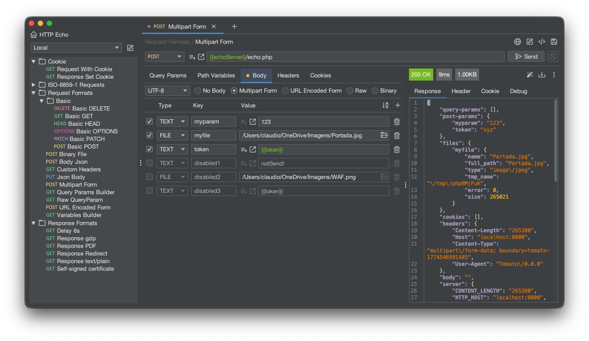

The open source, 100% offline REST client.
Fire requests, organize collections, and manage environments — all as plain files on your own machine. No cloud, no account, no strings attached.
Also available as a JRE-less .zip (requires Java 17+).
Windows & Portable are x64 · macOS is arm64.

A focused tool that keeps your work yours.
Every request, collection, and environment lives as plain files on your own disk — nothing is uploaded, synced, or held on someone else's servers. Where the popular alternative pushes your work into a cloud workspace by default, here your data never leaves your computer unless you decide to move it.
Open the app, fire requests, and organize collections with no internet connection and no login screen in the way. There's no forced sign-up, no session that expires, and no "you're offline" wall between you and your work — just launch and go.
Start working the moment you install. There are no seat licenses, no paywalled features quietly gating what you already built, and no monthly plan creeping up in price — the tool is free and open source, and it stays that way.
Collections and environments are stored as clean, readable JSON, one entity per file. That means you can version them in git, review changes in a real diff, and merge a teammate's work through the workflow you already trust — instead of being locked into a proprietary sync you can't inspect.
Point your data folder at a shared drive, a cloud-storage folder, or a git repository — whatever your team already uses. Collaboration doesn't require paying for a team tier; you choose the backup and sharing strategy, not the vendor.
Environment secrets are stored in encrypted KeePass vaults rather than sitting in plaintext alongside the rest of your config. Tokens and passwords stay protected on disk, so you can commit and share your environments without leaking credentials.
Import what you already have from other clients, and export back out when you need to. You're never trapped: your work moves in and out freely, so switching tools is a copy, not a migration project.
Large response bodies stream straight to disk instead of piling up in memory, so a massive payload won't freeze or crash the app. You stay in control — preview what you need, and save the full response only when you actually want it.
Turn any request into ready-to-paste code, like a curl command, in a click. Move seamlessly from clicking around the UI to scripting in your terminal or dropping a working example into your docs.
A lightweight desktop app that launches fast and stays responsive, with a clean dark interface. No heavy embedded browser, no bloated startup — just a focused tool that respects your machine's resources.